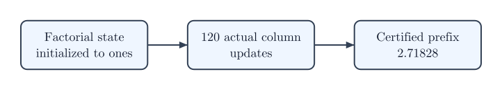
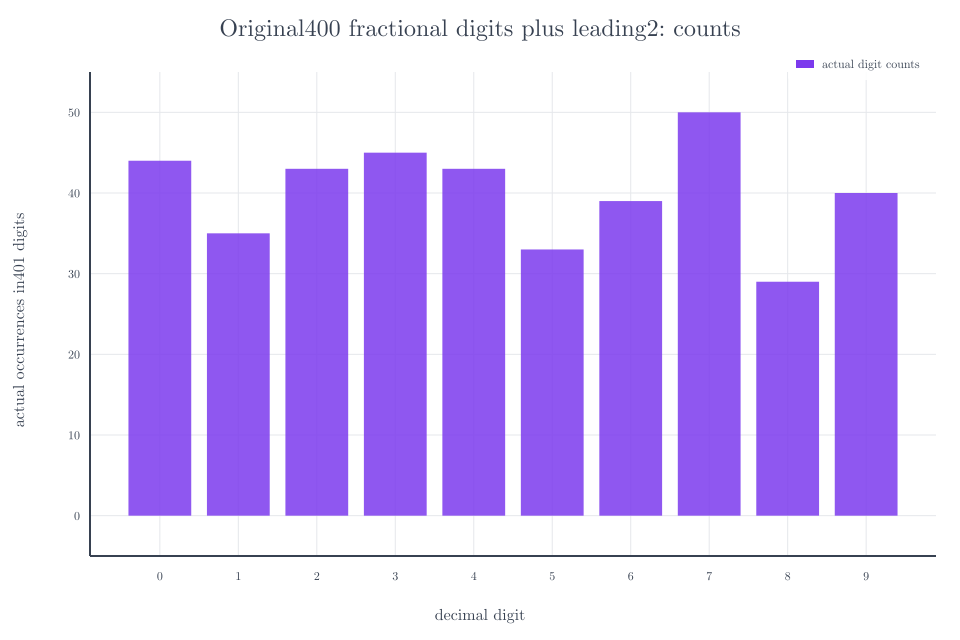
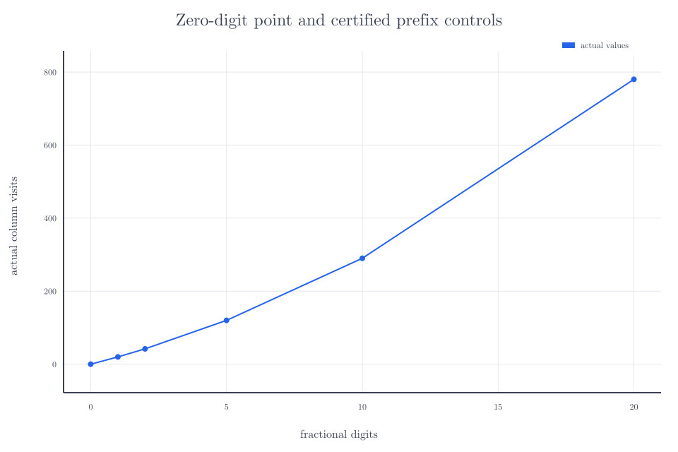
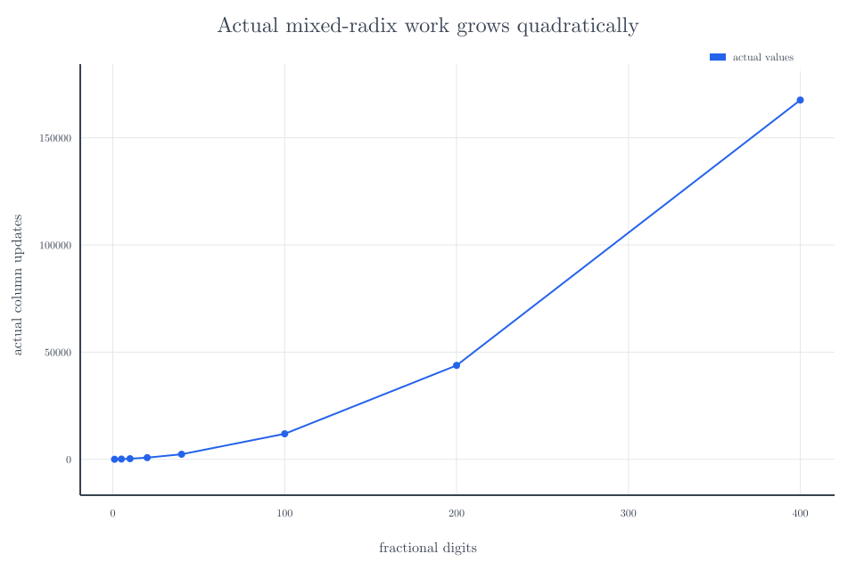

Spigot e: actual factorial carries and a certified prefix
Abstract
Decimal digits of e must be emitted in order without substituting a floating-point constant. A factorial-base state can be multiplied by ten and renormalized so each outgoing carry is the next digit. We expose actual states, retain the original40-digit prefix and400-fractional-digit histogram, and certify the emitted prefix with exact rational bounds.
Mechanism and mathematical scope
Start from e=2+sum(k=2..infinity)1/k!. With m retained factorial-base columns initialized to1, multiply the state by10 and propagate carry from column m down to2, storing remainder modulo each column base. The carry leaving column2 is the next actual emitted decimal digit. The working state suffices to produce later digits; already emitted output is not used to compute new ones.
A finite mixed-radix truncation needs a guard argument. Instead of assuming m=d+20 suffices, the native producer independently bounds the tail:
For m>=1, compare successive tail denominators with a geometric series to obtain the upper bound. Scale both rational endpoints by10^d and require their integer floors to agree with the actual emitted prefix. This certifies truncation; unresolved intervals fail explicitly. The mixed-radix loop uses bounded small integers, but the added certificate uses arbitrary-precision integers, so the entire routine is not a small-integer-only algorithm.
There are d*(d+19) actual column visits for m=d+20. Storage is linear without optional complete state histories; recording every state is quadratic. Arbitrary-precision certification adds separate bit work not included in the column counter. A short digit histogram cannot establish normality or randomness of e.
A tiny actual producing history
The table and native concept diagram read the same producing execution. Every block below is a complete editable C++ program.
#include <dm/dm.hpp>
int main() {
namespace a = dm::algorithms;
namespace g = dm::graphics;
std::filesystem::create_directories("build");
auto r = a::spigot_e_trace(5);
std::print("| actual digit index | carry digit | actual factorial-state columns2..m |\n| ---: | ---: | " "--- |\n");
for (const auto &s : r.history) {
const std::vector<int> state(s.remainders.begin() + 2,
s.remainders.end());
std::print("| {} | {} | `{}` |\n", s.index, s.digit, state);
}
std::print("\nActual emitted `{}`, certified {}.\n", r.digits, r.certified);
g::Diagram concept_diagram(48, 1100);
concept_diagram.node("n0", {0, 0}, "Factorial state initialized to ones");
concept_diagram.node("n1", {5, 0},
std::format("{} actual column updates",
r.column_updates));
concept_diagram.node("n2", {10, 0},
std::format("Certified prefix {}", r.digits));
concept_diagram.edge("n0", "n1").edge("n1", "n2");
concept_diagram.save_svg("build/spigot_tiny.svg");
}| actual digit index | carry digit | actual factorial-state columns2..m |
|---|---|---|
| 0 | 7 | [0, 1, 0, 1, 5, 4, 3, 2, 0, 10, 10, 10, 10, 10, 10, 10, 10, 10, 10, 10, 10, 10, 10, 10] |
| 1 | 1 | [1, 1, 3, 4, 2, 2, 0, 2, 9, 10, 0, 3, 9, 1, 10, 3, 15, 10, 4, 20, 16, 12, 8, 0] |
| 2 | 8 | [0, 1, 2, 3, 4, 6, 3, 2, 9, 1, 2, 10, 7, 1, 6, 4, 11, 7, 9, 18, 11, 8, 8, 0] |
| 3 | 2 | [1, 1, 3, 3, 1, 1, 1, 2, 1, 1, 4, 1, 0, 13, 14, 12, 5, 17, 18, 17, 3, 14, 8, 0] |
| 4 | 8 | [0, 1, 0, 1, 5, 4, 4, 3, 1, 2, 4, 10, 9, 4, 3, 4, 5, 8, 8, 3, 14, 5, 8, 0] |
Actual emitted 2.71828, certified true.

The retained original experiment
#include <dm/dm.hpp>
int main() {
namespace a = dm::algorithms;
namespace g = dm::graphics;
std::filesystem::create_directories("build");
auto prefix = a::spigot_e_run(40);
auto r = a::spigot_e_run(400);
std::print("| original40 fractional digits | known prefix reference | certified |\n| --- | --- | --- " "|\n| `{}` | `2.7182818284590452353602874713526624977572` | {} |\n",
prefix.digits, prefix.certified);
std::vector<std::string> labels;
std::vector<double> heights;
std::print("\n| decimal digit | actual count including leading2 |\n| ---: | ---: |\n");
for (std::size_t i = 0; i < 10; ++i) {
std::print("| {} | {} |\n", i, r.frequencies[i]);
labels.push_back(std::to_string(i));
heights.push_back(r.frequencies[i]);
}
auto plot =
g::RPlot::barplot(heights, labels, "actual digit counts", {124, 58, 237});
plot.title("Original400 fractional digits plus leading2: counts").x_label(
"decimal digit").y_label("actual occurrences in401 digits");
plot.save_svg("build/spigot_original.svg");
}| original40 fractional digits | known prefix reference | certified |
|---|---|---|
2.7182818284590452353602874713526624977572 | 2.7182818284590452353602874713526624977572 | true |
| decimal digit | actual count including leading2 |
|---|---|
| 0 | 44 |
| 1 | 35 |
| 2 | 43 |
| 3 | 45 |
| 4 | 43 |
| 5 | 33 |
| 6 | 39 |
| 7 | 50 |
| 8 | 29 |
| 9 | 40 |

Explicit controls
#include <dm/dm.hpp>
int main() {
namespace a = dm::algorithms;
namespace g = dm::graphics;
std::filesystem::create_directories("build");
std::vector<double> x, y;
std::print("| fractional digits | actual output | certified | columns | updates |\n| ---: | --- | --- | " "---: | ---: |\n");
for (int n : {0, 1, 2, 5, 10, 20}) {
auto r = a::spigot_e_run(n);
std::print("| {} | `{}` | {} | {} | {} |\n", n, r.digits, r.certified,
r.columns, r.column_updates);
x.push_back(n);
y.push_back(r.column_updates);
}
auto plot = g::RPlot::create();
plot.lines(x, y, "actual values", {37, 99, 235}).points(x, y, {37, 99, 235},
4).title(
"Zero-digit point and certified prefix controls").x_label(
"fractional digits").y_label("actual column visits");
plot.save_svg("build/spigot_controls.svg");
}| fractional digits | actual output | certified | columns | updates |
|---|---|---|---|---|
| 0 | 2. | true | 20 | 0 |
| 1 | 2.7 | true | 21 | 20 |
| 2 | 2.71 | true | 22 | 42 |
| 5 | 2.71828 | true | 25 | 120 |
| 10 | 2.7182818284 | true | 30 | 290 |
| 20 | 2.71828182845904523536 | true | 40 | 780 |

Actual selected work and sensitivity
#include <dm/dm.hpp>
int main() {
namespace a = dm::algorithms;
namespace g = dm::graphics;
std::filesystem::create_directories("build");
std::vector<double> x, y;
std::print("| requested fractional digits | actual column visits | d*(d+19) reference | certified |\n| " "---: | ---: | ---: | --- |\n");
for (int n : {1, 5, 10, 20, 40, 100, 200, 400}) {
auto r = a::spigot_e_run(n);
std::print("| {} | {} | {} | {} |\n", n, r.column_updates, n * (n + 19),
r.certified);
x.push_back(n);
y.push_back(r.column_updates);
}
auto plot = g::RPlot::create();
plot.lines(x, y, "actual values", {37, 99, 235}).points(x, y, {37, 99, 235},
4).title(
"Actual mixed-radix work grows quadratically").x_label(
"fractional digits").y_label("actual column updates");
plot.save_svg("build/spigot_work.svg");
}| requested fractional digits | actual column visits | d*(d+19) reference | certified |
|---|---|---|---|
| 1 | 20 | 20 | true |
| 5 | 120 | 120 | true |
| 10 | 290 | 290 | true |
| 20 | 780 | 780 | true |
| 40 | 2360 | 2360 | true |
| 100 | 11900 | 11900 | true |
| 200 | 43800 | 43800 | true |
| 400 | 167600 | 167600 | true |

API and interpretation
Requested counts are nonnegative and bounded separately from actual work and captured state values. Defaults allow4096 fractional digits, with an intrinsic100000 cap protecting small-column arithmetic. The decimal point is retained even for zero digits. Frequencies intentionally count the leading2, correcting the old400-digit wording:400 fractional digits give401 counted digits. Exact rational certification is an extra computation, not a claim of streaming with unbounded precision.
Reusable producers, fixtures and histories live in the canonical C++ library. Captured records own their values and do not come from a separate report replay. Selected counters and record/scalar policies are specified at their API boundaries; they are not peak-byte or wall-time budgets. Synthetic structural inputs are controlled fixtures for these mechanisms.
References
Verified in the shared ten-document batch: 67 scoped native cases and9 formatter
cases;20 directly instrumented ASan/UBSan cases;87 executable public
examples;402/402 full-file definitions across29 scopes;10 hovers;10569
independent records/108541 checks;frozen comparisons across all ten families
with density-rank, long-prefix arithmetic, initial residual and complete-input
corrections recorded;15 checkout/installed standalone headers and linked
ten-family consumer;40 executed programs and40 inspected figures with both
exports. Receipts: build/mepml-conversion/batch-364-373/.